Tutorial 2: Creating Polygon Effects
Here you will learn how to create a polygon object
Step one, we open Tails7.mfa in Clickteam Fusion.
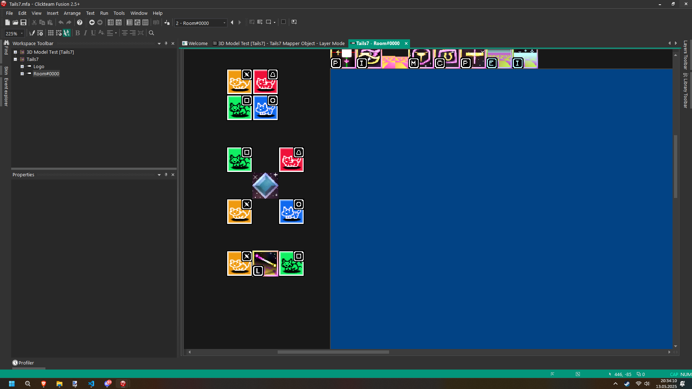Note that there are already finished Polygon object with points. I'm going to duplicate it and change the textures so it doesn't get confused.
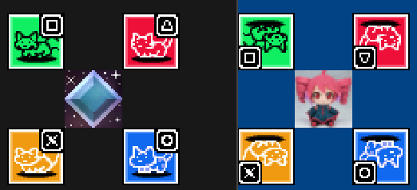For other objects selected, I turn off the ability to create.
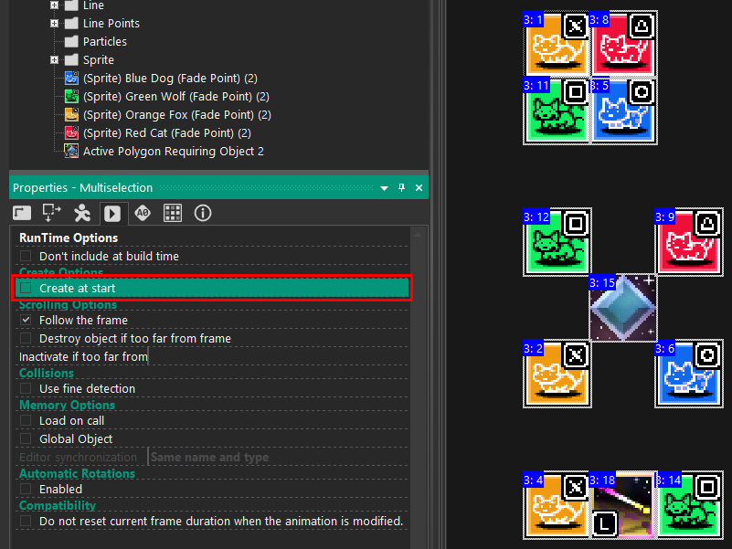We launch the frame and. Polygon not working?
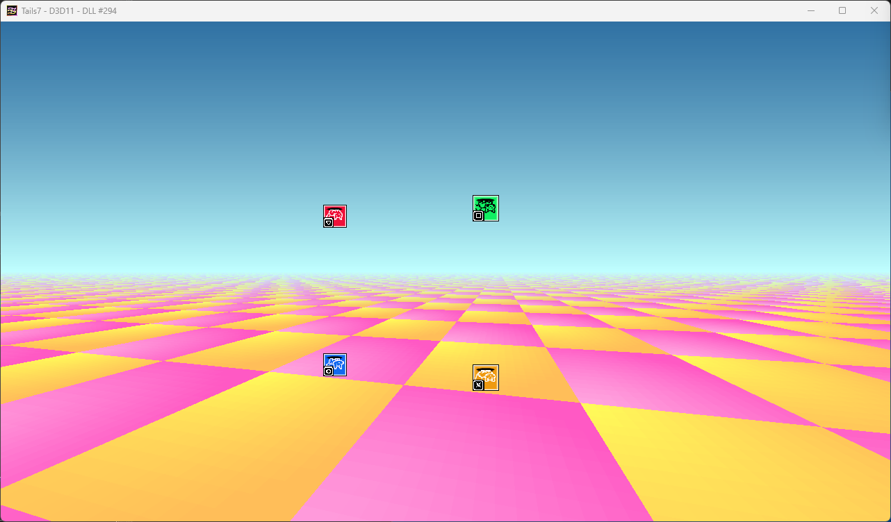We need to configure Polygon to work with the new points. Go to the “Set Points and Other Varibles” behavior.
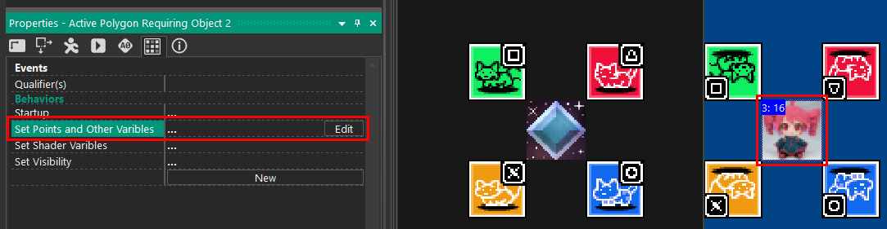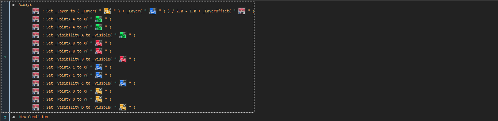
So here I have to replace the previous points with new duplicate ones.
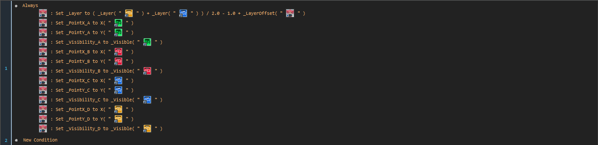After placing the polygons correctly and starting the project, everything works!
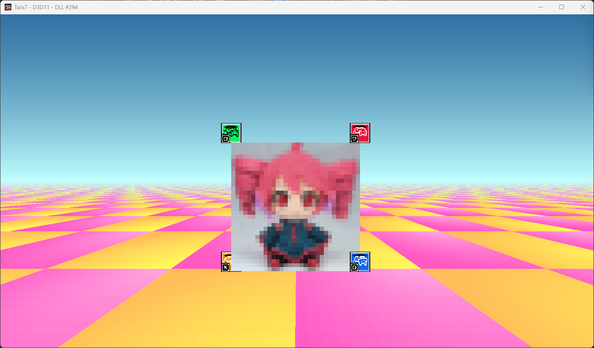I will now add the ability to create these polygons depending on the new object I made
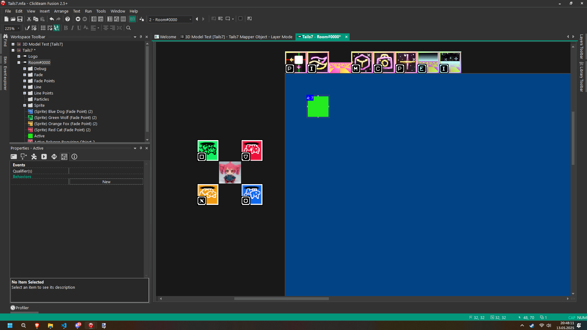After performing events as below, polygons are created for each of these objects!
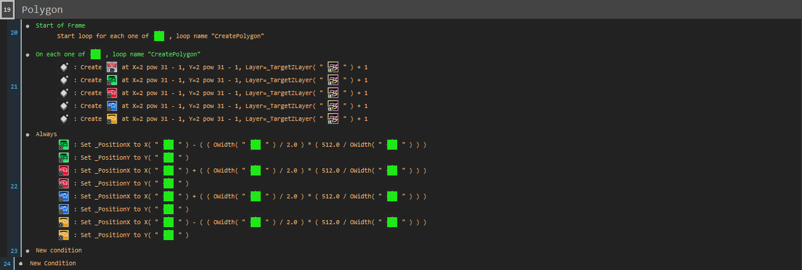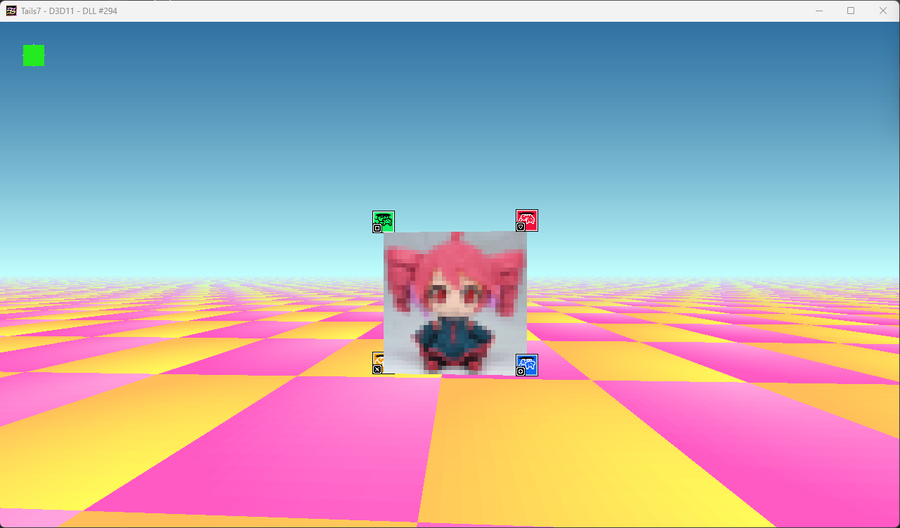
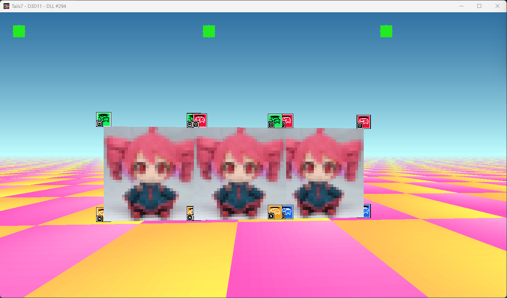